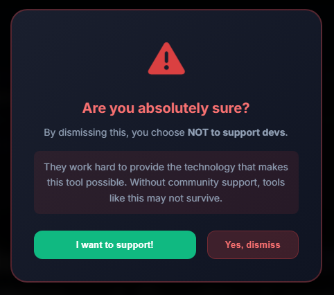

Itzcrih method
UPLOAD DENGAN ITZCRIH METHOD
Tidak perlu menggunakan browser edge atau method ribet lainnya cukup ikuti panduan di bawah (kalo bingung dengan panduan di bawah cari aja vt yang bahas tutor upload dengan itzcrih method).
Panduan biar video kalian ke up hd ygy:
Upload video ke link yang yang telah di-export (dari alight motion/dari wink misalnya) ke link yang paling bawah ygy.
Tunggu prosesnya hingga selesai sepenuhnya oleh webnya.
Download file hasil pemrosesan tersebut biasanya file video nya bernama (itzcrih_optimized_xxxx.mp4).
Upload file hasil proses tadi ke TikTok Studio atau TikTok Web (disarankan menggunakan PC / Laptop) seperti biasa.
lihat Petunjuk dibawah (Apabila muncul seperti ini) :
Apabila muncul seperti ini tunggu sekitar 10 detik dan nanti akan muncul di bawah berupa tombol "Skip and proceed".
selanjutnya :

kemudian tunggu dan klik "Yes, dismiss".